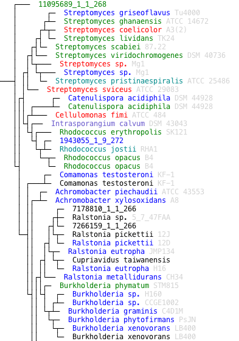
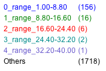

KBase is currently configured to work with metagenomic sample data from MG-RAST (http://metagenomics.anl.gov/). Here we put several tree scripts together to demonstrate an example analysis of a metagenomic sample by mapping reads to an isolate gene tree and displaying the abundance results.
First, determine the metagenomic sample ID you wish to work with from MG-RAST. For this tutorial, we will be using a public dataset with ID 4502925.3.
Next, identify a protein family to investigate. Currently, this KBase method works with COG gene families. We will be using COG121 as an example. First, let's find a tree for COG121. We can do this with the tree-find-tree-ids command to search based on the source ID of the tree. The source ID provides a mapping from the tree to gene families from which it was built. The 'tree-find-tree-ids', as shown earlier in this tutorial, allows us to search source IDs with wildcard characters. Let's search now for all trees with a source ID that ends in "121":
> tree-find-tree-ids -s '*121'
kb|tree.10115 tree00010121
kb|tree.1030932 0036121
kb|tree.1031488 0037121
...
kb|tree.987050 COG1121
kb|tree.987144 COG121
kb|tree.988147 COG2121
kb|tree.988888 COG3121
kb|tree.989941 COG4121
...
The list includes several COG trees, including the specific tree we are looking for with KBase ID kb|tree.987144.
Given a metagenomic sample, and an isolate tree built from a COG gene family, we can now query the Tree service to get a list of abundance values mapped to each leaf with the following command:
> tree-compute-abundance-profile -t 'kb|tree.987144' -m '4502925.3' -f 'COG0121' -s 'COG'
Note that when specifying the COG gene family name, leading zeros are required so that the total character count is 7, as indicated above. Behind the scenes, this method will fetch a set of reads from the indicated metagenomic sample from the KBase Communities service. These reads will have been assigned to the specified gene family you specified. Next, the isolate sequences aligned to generate the isolate tree are retrieved. Third, UCLUST is used to map metagenomic reads to target sequences of the tree. Finally, for each leaf in the tree, the number of hits matching the input search criteria is tabulated and returned. The output of the call above will look like this:
2132374_1_1_248 10
2164913_1_1_219 2
20567034_1_1_244 8
3763543_1_1_278 1
16364954_1_1_267 1
19987080_1_3_210 2
5554676_1_1_251 2
14696990_1_8_277 2
...
found 739 hits of 1889 metagenomic reads
A two column tab delimited list is returned with leaf IDs in the first column and number of reads mapped to that leaf in the second column. Additionally, a message is printed to standard error that specifies the number of reads that were successfully mapped to the tree out of the total number of reads that were returned. In this case, UCLUST found hits to 739 of the 1889 total reads assigned to COG121. The tree-compute-abundance-profile also allows you to set a couple options to indicate the stringency of the matching criterea. To specify the minimum percent identity to accept a hit, use the '-p' option (default=50%). To set the minimum length of an accepted hit, use the '-l' option (default=20). For instance, if the default options are not stringent enough, you can rerun the computation like so:
> tree-compute-abundance-profile -t 'kb|tree.987144' -m '4502925.3' -f 'COG0121' -s 'COG' -p 75 -l 30
2132374_1_1_248 6
2164913_1_1_219 2
20567034_1_1_244 8
3763543_1_1_278 1
16364954_1_1_267 1
19987080_1_3_210 2
5554676_1_1_251 2
14696990_1_8_277 1
13610547_1_17_283 1
...
found 506 hits of 1889 metagenomic reads
With the increased stringency, the method was only able to find matches for 506 of the 1889 sequences.
Finally, if you have metagenomic sample data that is private, you can still use this method by passing an authentication key generated from MG-RAST. After you have generated the key, you can use it to access private data using the '-a' flag:
> tree-compute-abundance-profile -t 'kb|tree.987144' -m '4502925.3' -f 'COG0121' -s 'COG' -a 'ftcxb98i3nWdvsamGkKe7TsUn'
Here, ftcxb98i3nWdvsamGkKe7TsUn was the temporary authentication key provided by MG-RAST.
Now that you've computed an abundance profile, you can visualize the results. To do this, you need to actually save the abundance results to a file and retrieve the actual tree. As before, use the 'get-tree' method to download the tree of interest, and save the tree to a file. Then rerun the 'tree-compute-abundance-profile' method this time saving results to a file as well.
> tree-get-tree 'kb|tree.987144' > myFullTree.newick
> tree-compute-abundance-profile -t 'kb|tree.987144' -m '4502925.3' -f 'COG0121' -s 'COG' > abundance.data
found 739 hits of 1889 metagenomic reads
The tree will likely include many leaf nodes that had zero hits to the set of metagenomic reads. In some cases, you may not want to see the leaves that had zero hits, especially for large trees with tens of thousands of sequences. So next, you will prune the tree so that all leaf nodes without any hits are removed. This will require you to first extract a list of leaf nodes to save. If the leaf label appeared in the abundanc result, we'll save it. Use the standard linux 'cut' command to extract the first column of data from the abundance results and save it to a file. Then use the 'tre-remove-nodes' command to remove all but the specified nodes. Save the pruned tree to a new file.
> cat abundance.data | cut -f 1 > leavesToSave.list
> tree-remove-nodes -i myFullTree.newick -s leavesToSave.list > myPrunedTree.newick
A very simple way to look at the metagenomic sample data is to bin the results based on the number of reads that matched each leaf node. The binned results will be easier to see in the rendered html file. The tree service provides a method to bin the data for you named 'tree-filter-abundance-profile'. This script can also normalize the read counts and remove leaves that do not have a minimum threshold of hits. For now though, let's just group the raw read counts into 5 bins:
> tree-filter-abundance-profile -i abundance.data -g 5 > groupedAbundance.data
Although you now have everything you need to render the abundance results on a Tree, let us spend just a few more minutes to get a nicer tree visualization with scientific names and links to KBase features.
First, create a mapping file that can provide the tree-to-html method with information to map each node label to a scientific name of its source genome, if that information exists. We can do this by using the 'tree-get-leaf-id-mapping' method, which returns a two column list mapping internal node ids to KBase feature or protein ids. Save the result of this method to a mapping file.
> tree-get-leaf-id-mapping -f 'kb|tree.987144' > leafToFid.map
> cat leafToFid.map
10119_1_1_255 kb|g.484.peg.393
10156604_1_1_230 kb|g.21124.CDS.2168
10171200_1_1_253 kb|g.1266.peg.2784
10179626_1_5_293
10183187_1_1_255 kb|g.1343.peg.2477
...
Notice that like before, we may not get a mapping to a feature for every single sequence in the alignment. Now we can use the CDM command line scripts again to extract the scientific name of each genome that owns each feature in our list. Save this to a file named 'fidToSciName.map'. This results in a three column table with leaf ids in the first column, feature ids in the second column, and scientific names in the last column. The tree-to-html expects a mapping from the leaf id to a label, so you also need to again use the 'cut' command to extract just the first and third columns.
> cat leafToFid.map | get_relationship_IsOwnedBy --to scientific_name > fidToSciName.map
> cat fidToSciName.map | cut -f 1,3 > leafToSciName.map
Another nice optional step is to link the nodes in the HTML page to the KBase Labs genome browser. As before, we can do this simply by using the tree-create-url-map. Pass in the second column of the 'leafToFid.map' you created earlier to feed in the feature ids. Then save the result to a file named 'fidToUrl.map'. You can accomplish these steps with the following command:
> cut leafToFid.map -f 2 | tree-create-url-map -u http://140.221.92.12/feature_info/feature.html?id= > fidToUrl.map
There remains one last problem before we can visualize the tree with links. We have a map from feature ids to URLs, but we actually need a map from leaf nodes to urls. To do this, we need to use the 'paste' command which can concatenate text files together to create a new table of data. First we create two new files with a list of leaf ids and a list of URLs in the same order. Again, use the cut command to extract this data. Then call the 'paste' command with the names of these two files, saving the results to the final map we need: leafToUrl.map. (Note: 'paste' was not available in Iris at the time of this writing).
> cut leafToFid.map -f 1 > leaf_list.txt
> cut fidToUrl.map -f 2 > url_list.txt
> paste leaf_list.txt url_list.txt > leafToUrl.map
And with that, we can actually view a relatively nice looking tree, where nodes are colored by thier abundance data. Use the tree-to-html command to render both the full tree with the abundances colored, or the smaller pruned tree with abundances colored, using the following commands. As before, the '-raw' option is suggested so that no additional annotation information is displayed. The '-a' option specifies the labels to display. The '-l' option links the nodes to URLs that we provided. Finally, the new '-c' option indicates that nodes should be colored by the binned abundance data hit counts. In both cases, save the results
> cat myPrunedTree.newick | tree-to-html -c groupedAbundance.data -a leafToSciName.map -l leafToUrl.map -raw > prunedTreeWithAbundanceData.html
> cat myFullTree.newick | tree-to-html -c groupedAbundance.data -a leafToSciName.map -l leafToUrl.map -raw > treeWithAbundanceData.html
The tree with abundance data should like this. Note that a legend as shown is also generated and displayed at the bottom of the page.


For quick reference, here is an abreviated list of commands to reproduce the results presented in the last section of this tutorial.
# figure out which kbase tree was created from COG121
tree-find-tree-ids -s 'COG121'
# get abundance profile, save it to 'abundance.data'
tree-compute-abundance-profile -t 'kb|tree.987144' -m '4502925.3' -f 'COG0121' -s 'COG' > abundance.data
# get the specified tree, save it to 'myFullTree.newick'
tree-get-tree 'kb|tree.987144' > myFullTree.newick
# (optional) remove all nodes that were not get a hit by a read, save as 'myPrunedTree.newick'
cat abundance.data | cut -f 1 > leavesToSave.list
tree-remove-nodes -i myFullTree.newick -s leavesToSave.list > myPrunedTree.newick
# group the results into 5 bins based on read counts
tree-filter-abundance-profile -i abundance.data -g 5 > groupedAbundance.data
# create aliases for the leaves so that they can be labeled with scientific names (as a one liner!)
tree-get-leaf-id-mapping -f 'kb|tree.987144' | get_relationship_IsOwnedBy --to scientific_name | cut -f 1,3 > leafToSciName.map
# (optional) create URLs so that each node can be a link to the kbase genome browser feature page
cut leafToFid.map -f 2 | tree-create-url-map -u http://140.221.92.12/feature_info/feature.html?id= > fidToUrl.map
cut leafToFid.map -f 1 > leaf_list.txt
cut fidToUrl.map -f 2 > url_list.txt
paste leaf_list.txt url_list.txt > leafToUrl.map
# generate the HTML view of the tree
cat myPrunedTree.newick | tree-to-html -c groupedAbundance.data -a leafToSciName.map -l leafToUrl.map -raw > prunedTreeWithAbundanceData.html
cat myFullTree.newick | tree-to-html -c groupedAbundance.data -a leafToSciName.map -l leafToUrl.map -raw > treeWithAbundanceData.html